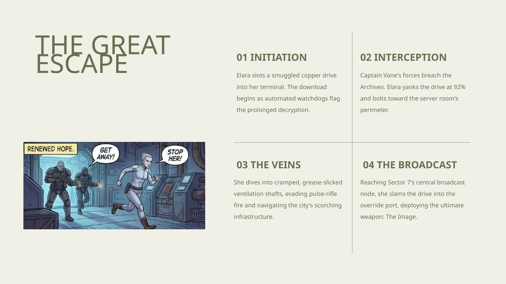
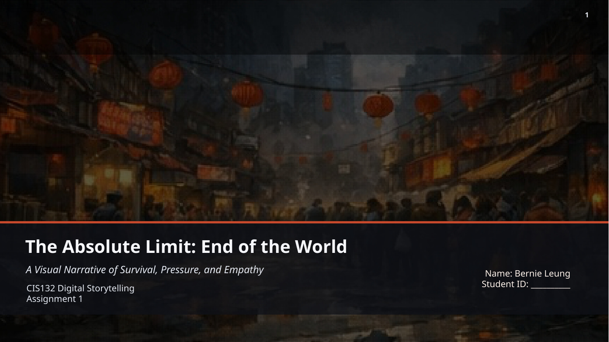
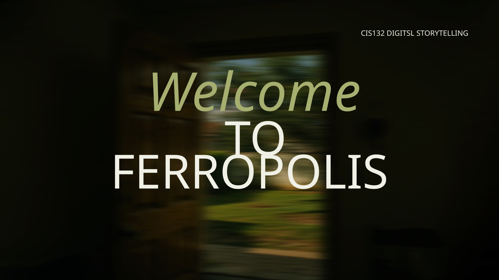
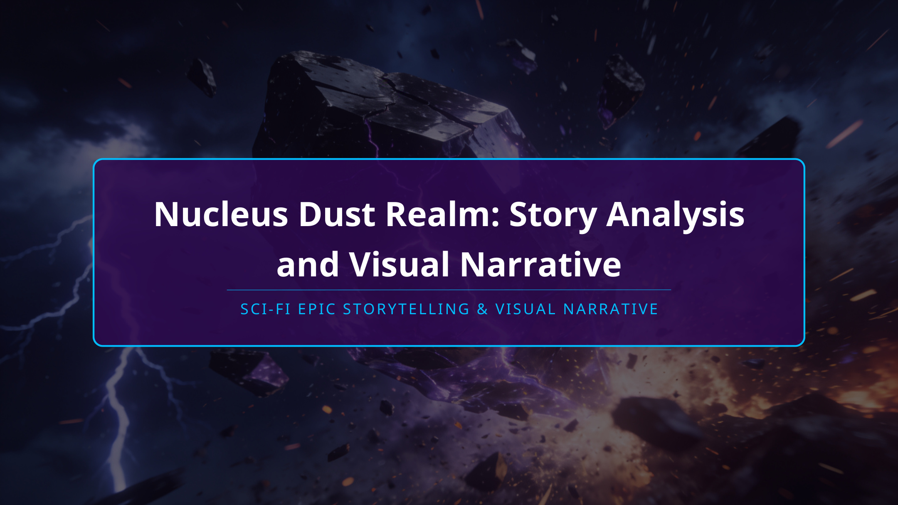
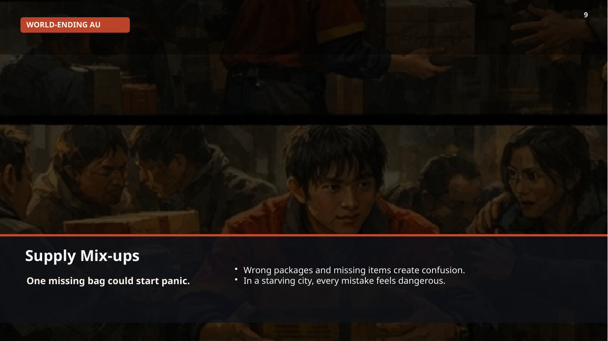
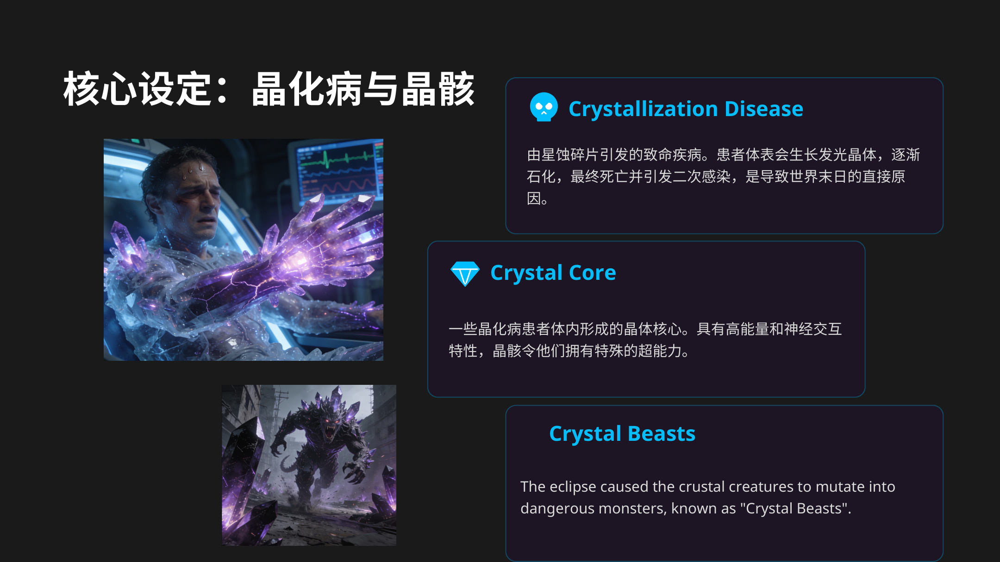

ENTER THE ARCHIVE
UNSEAL THE WORLDS
This site reorganises your uploaded story files into a cinematic, game-style portal inspired by the dark sci-fi presentation language of official Hypergryph world sites. The structure now feels like a real franchise website instead of just a file dump.
NOTICE / UPDATES
A homepage block styled like the “notice / information” areas on Hypergryph sites, but fed with your own uploaded narrative materials.
System Broadcast
The home page now works like a franchise portal: big hero, update rail, world entries, character profiles, themed media blocks, and dedicated subpages for each major narrative.
Jax and Elara are merged into a single lore hub so the transmedia connection finally feels intentional.
Kevin’s emotional survival arc is now presented as a clean story page with timeline beats and image panels.
The Chinese sci-fi deck becomes a separate universe page with themes, factions and visual analysis sections.
WORLD ENTRY
Each card is treated like an official world branch. Instead of uploading files as random downloads, the stories are converted into navigable website content.

World-Ending AU
Kevin survives a collapsing city by working inside a relief station where scarcity, panic and exhaustion slowly push him to the limit before empathy pulls him back.

Ferropolis
A layered dystopian metropolis where Elara exposes erased memory from the Archives and Jax uncovers living proof beneath the bedrock.

Nucleus Dust Realm
A post-disaster crystal world built on infection, floating cities, rebel camps, power struggle and the search for a third path toward coexistence.
KEY PROFILES
Borrowing the operator / character display feel from Arknights-style sites, but using your own protagonists as the featured cast.
Kevin
19-year-old student, shy and clumsy, pulled into relief-station survival where pressure turns into a lesson about empathy and teamwork.
Elara
The Data Weaver who risks everything to keep a fragile truth alive and awaken a city through the forbidden image of nature.
Jax
A blind sonar-scrapper who hears what the city hides and discovers the titan-tree foundation beneath the doctrine of metal supremacy.
Mac / 麦克
A medical researcher pushed beyond simple cure-or-destroy logic, searching for a third route where infected and uninfected can coexist.
ARCHIVE FOCUS
The homepage also highlights how the Ferropolis materials can be framed like a proper connected universe instead of two separate school slides.
Ferropolis becomes the real “main IP” of the site.
Elara handles the informational awakening in the Archives, while Jax provides the physical proof from the undercity. Together they reveal that Ferropolis is built on buried life, hidden memory and systemic suppression.
MEDIA / VISUAL ARCHIVE
Slide visuals from your uploaded files are reused as website media panels so the site feels populated immediately.

Kevin at the Limit
The emotional breaking point in the relief station becomes a cinematic highlight block.
A City Awakened
The forest broadcast becomes your main website visual language for revelation and hope.

Crystal Catastrophe
Nucleus Dust Realm introduces a second visual system built on purple-black disaster and luminous crystal mutation.